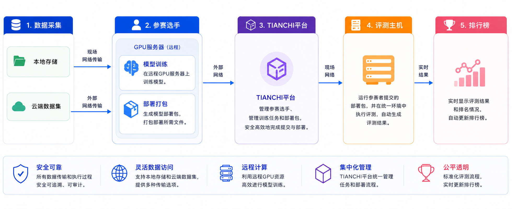

北京线下赛
北京线下赛说明
天池线下赛将在北京举办。线下赛阶段延续真机赛的技术路线、任务设置与部署方式，参赛队伍应基于真机赛阶段的代码、模型和部署流程完成现场准备与评测。
参赛资格
参赛队伍需在 7 月 30 日前完成工作人员处的现场赛报名。完成报名后，参赛队伍可在现场修正模型，并更新现场赛成绩。
参赛队伍需重点关注以下事项：
使用与真机赛一致的项目代码仓库、运行逻辑和模型部署方式。
按照真机赛配置要求，完成数据转换、模型训练、模型推理和部署配置。
采用 Docker 镜像作为提交和评测载体，由组织方完成现场部署与评测。
线下赛比赛内容与真机赛保持一致，不新增额外任务类型。
成绩组成
总成绩满分为 100 分，由仿真赛、真机赛和现场赛三部分组成：
成绩项 |
分值 |
说明 |
|---|---|---|
仿真赛 |
20 分 |
采用仿真赛阶段成绩 |
真机赛 |
30 分 |
采用真机赛阶段成绩 |
现场赛 |
50 分 |
由北京线下赛三个现场任务组成 |
现场赛 50 分由三个任务组成：
现场赛任务 |
分值 |
说明 |
|---|---|---|
汽车大件上料 |
10 分 |
抓取汽车钣金料并放置到目标脚撑 |
桌面零件分拣 |
15 分 |
分拣安全带、线缆、pin 口三类物料 |
工业零件称重 |
25 分 |
完成机械套管称重与收纳 |
现场资源
线下赛现场将配置 6 台 Kuavo 4pro 机器人，每个任务设置一台评测机和一台备用机，并配置 2 套 4090 电脑主机用于现场部署与评测。
线下赛数据
线下赛任务与真机赛任务保持一致，因此数据格式、话题名称、数据转换方式和推理配置原则均参考 真机赛 页面。
现场队伍可以选择性使用官方提供的线下赛数据集，以及真机赛阶段已公布的数据集。线下赛预计为每个任务补充 200 条现场数据，6 台 Kuavo 4pro 总计采集约 1200 条数据。
数据集地址： LET-Tianchi-Dataset on ModelScope
Note
线下赛数据的具体目录、发布时间和可用范围以后续官方通知为准。
线下赛过程
现场队伍可基于官方提供的数据集和真机赛数据自主修改模型，并由组织方部署评测。模型评测排队间隔至少 1 小时，现场将展示实时成绩排名榜。
评测限制如下：
每个场景每次提交的模型可尝试 3 次测评，取平均得分。
单个得分点动作连续 3 次没有成功，则认定本轮失败。
出现碰撞或其他异常事件时，认定本轮失败。
本轮失败时，以当前已获得分数计分，后续操作不再计分。
线下赛任务说明
北京线下赛比赛内容与真机赛保持一致，包含 3 个独立任务。三个任务现场赛总分为 50 分。
任务1：汽车大件上料（10分）
场景规范：机器人将汽车大件从脚撑上拾取，手臂转动一定角度后放置到旁边的目标脚撑上。
评分标准如下，每次测评时间不超过 3 分钟：
评分点 |
分值 |
说明 |
|---|---|---|
手臂移至钣金正下方 |
0.5 分 |
单次计分 |
抓取成功且稳定 |
1.5 分 |
单次计分 |
准确移至脚托正上方位置 |
2 分 |
单次计分 |
钣金与脚托限位处稳定接触 |
1.5 分/脚托 |
共 4 个脚托 |
任务2：桌面零件分拣（15分）
场景规范：机器人站立不动，夹取桌面上的安全带、pin 口或线缆，将其放至指定的空箱子中。
现场将放置安全带、线缆、pin 口三种物料，每种物料各一个，共三个。三种物料按照以下顺序分别摆放三轮：
pin 口、安全带、线缆
安全带、线缆、pin 口
线缆、pin 口、安全带
机器人夹取物品后，需要将其放置到盒子的指定空位处，目标顺序从左到右依次为：pin 口、安全带、线缆。
评分标准如下，每次测评时间不超过 4 分钟：
评分点 |
分值 |
说明 |
|---|---|---|
抓取成功且稳定 |
1 分/物体 |
共 3 个物体 |
准确放至指定位置 |
3 分/物体 |
共 3 个物体 |
全部完成 |
3 分 |
完成全部物体后获得 |
任务3：工业零件称重（25分）
场景规范：机器人从桌面上拾取机械套管，放置在电子秤上完成称重，再拾起并放入收纳筐中。
现场将在指定位置成排放置三个机械套管。机器人需要抓取套管，将其放置到称重台上完成称重，再从称重台拾起并稳定放入指定收纳筐中。
评分标准如下，每次测评时间不超过 4 分钟：
评分点 |
分值 |
说明 |
|---|---|---|
抓取成功且稳定 |
2 分/套管 |
共 3 个套管 |
准确放至称重台并完成称重 |
1 分/套管 |
共 3 个套管 |
从称重台再次拾取成功 |
3 分/套管 |
共 3 个套管 |
稳定放入指定收纳筐中 |
1.5 分/套管 |
共 3 个套管 |
全部完成 |
2.5 分 |
完成全部套管后获得 |
线下赛定位与实施说明
相比常规真机赛远程评测流程，北京线下赛主要存在以下差异：
线下赛比拼：参赛队伍需基于真机赛阶段形成的任务模型，结合线下赛数据进行后训练与优化，重点比拼模型在现场任务数据上的适应能力、泛化能力和稳定部署能力。
现场评测：参赛队伍需在北京线下赛现场完成模型调试、提交确认和评测确认。
现场沟通：若出现设备异常、网络异常或镜像运行异常，参赛队伍需按照现场工作人员安排处理。
实时排名：线下赛现场将设置实时排行榜，用于展示评测进展和阶段性成绩。
参赛注意事项
参赛选手当天需要自备电脑转接口（网口转 USB/Type-C）及 5 至 10 米网线。
由于现场参赛选手较多，现场网络负载可能较大，建议自备移动网络。
现场参赛选手可以自带移动硬盘，将提交作品转入评测设备进行评测。
从比赛开始至结束，只有操作员及评测人员可以按规定操作机器人。
线下赛日程安排
日期 |
时间 |
流程 |
备注 |
|---|---|---|---|
7 月 27 日 - 7 月 30 日 |
9:30-18:30 |
场景搭建、数据采集 |
现场网络确认、现场流程彩排；每台采集 200 条数据，6 台 Kuavo 4pro 总共约 1200 条数据 |
7 月 31 日 |
9:30-10:00 |
选手报到 |
主背景板签字打卡 |
7 月 31 日 |
10:00-10:30 |
比赛开幕 |
开幕宣讲 |
7 月 31 日 |
10:30-18:00 |
任务一：汽车大件上料；任务二：桌面零件分拣 |
2 台 Kuavo 4pro 评测机 |
7 月 31 日 |
18:00-18:30 |
当日成绩公布、专家点评 |
现场队伍采访 |
8 月 1 日 |
9:30-16:00 |
任务三：工业零件称重 |
1 台 Kuavo 4pro 评测机 |
8 月 1 日 |
16:00-16:30 |
当日成绩公布、专家点评 |
现场队伍采访 |
8 月 1 日 |
16:30-17:00 |
比赛成绩确认、公布 |
|
8 月 1 日 |
17:00-17:30 |
颁奖仪式 |
石景山人形机器人训练中心一层大厅；组委会代表致词、结果宣布、颁奖、合影 |
8 月 1 日 |
17:30-18:00 |
现场队伍采访、现场恢复 |
|
8 月 2 日 |
9:30-18:30 |
现场恢复、物料入库 |
线下赛选手工作流
{kind=link}
